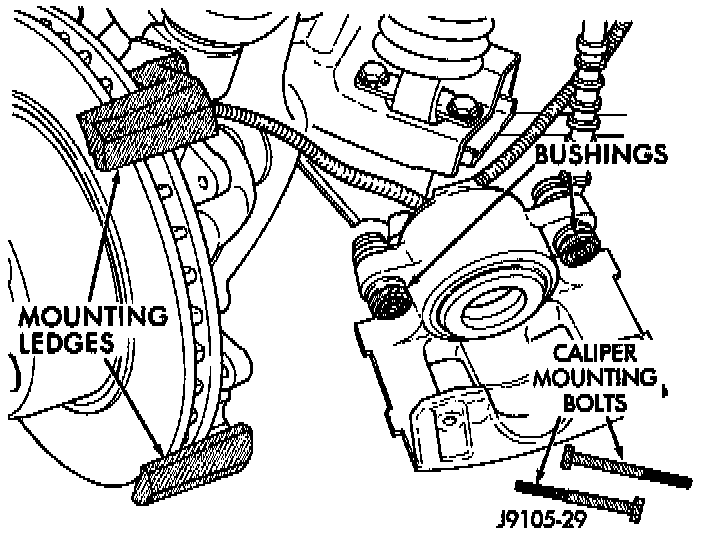
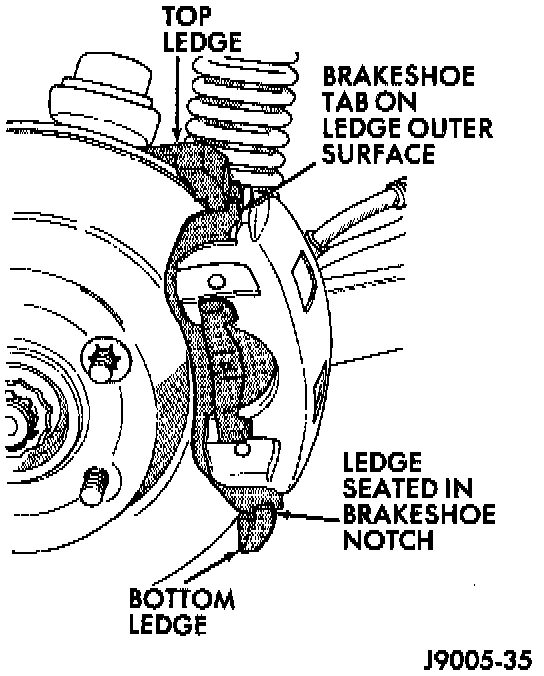

Installation

1. Clean brake shoe mounting ledge slide surfaces of steering knuckle with wire brush. Then apply Tight coat of Mopar multi-mileage grease to slide surfaces. Lubricate mounting bolts and bushings with silicone grease.
2. Install inboard shoe in caliper and verify shoe retaining springs are fully seated into the piston.
3. Install outboard shoe in caliper by starting one end of shoe in caliper and rotating shoe downward into place. Verify shoe locating Tugs and shoe spring are seated.
Caliper Installation:

4. Install caliper by position notches at lower end of brake shoes on bottom mounting ledge. Then install caliper over rotor and seat upper ends of brake shoes on top mounting ledge.
CAUTION: Before securing the caliper, be sure the caliper brake hose is not twisted, kinked or touching any chassis components.
5. Install and tighten caliper mounting bolts to 10-20 Nm (7-15 ft. lbs.).
Mounting Bolt Dimensions:

CAUTION: If new caliper bolts are being installed, or if reason for repair was a drag/pull condition, check caliper bolt length. If the bolts have a shank length greater than 67.6 mm (2.66 inches), they will contact the inboard brake shoe causing a partial apply condition.
6. Install wheel and tire assemblies.
7. Pump brake pedal until caliper pistons and brake shoes are seated.
8. Top off brake fluid level if necessary.